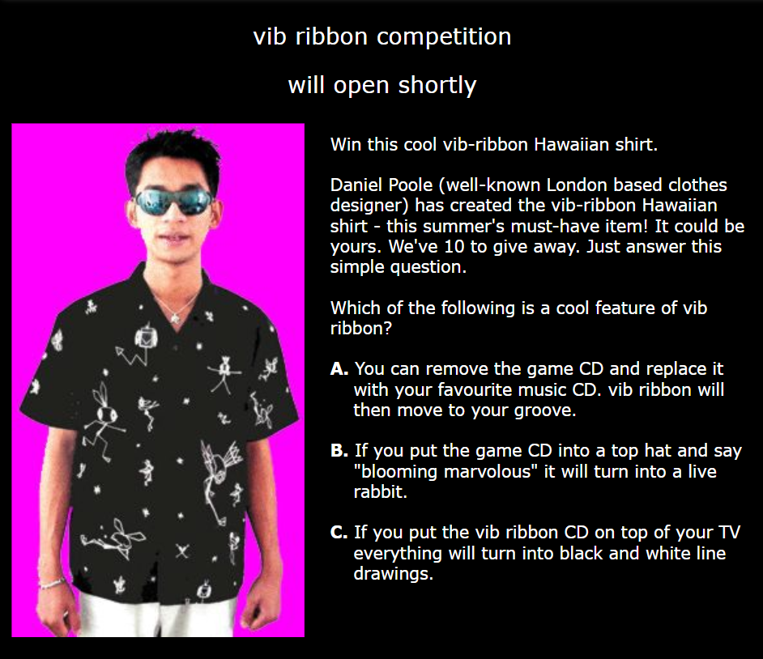
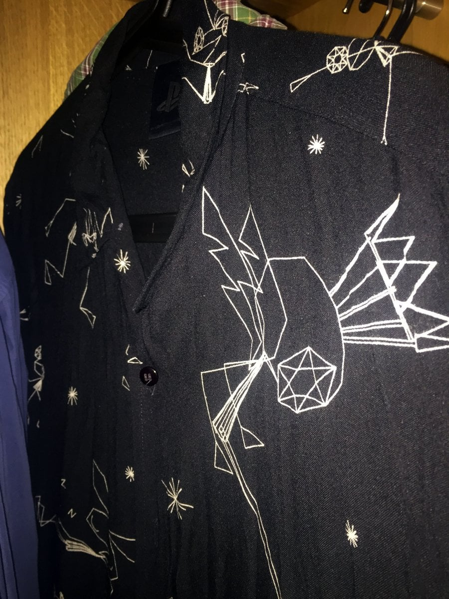
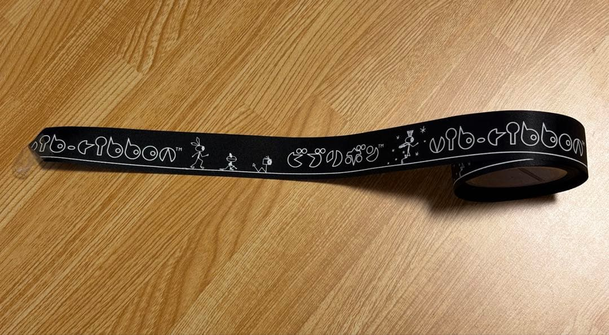
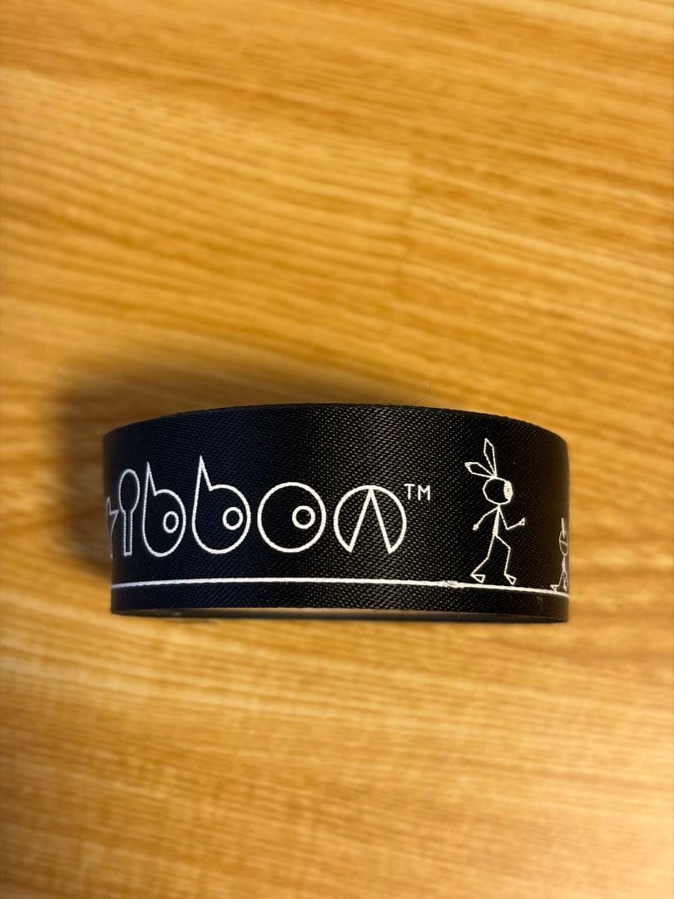
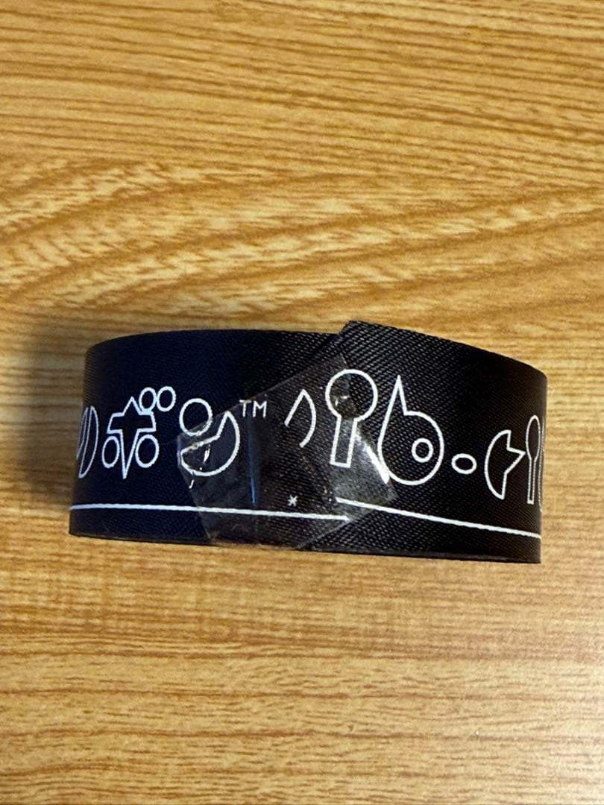
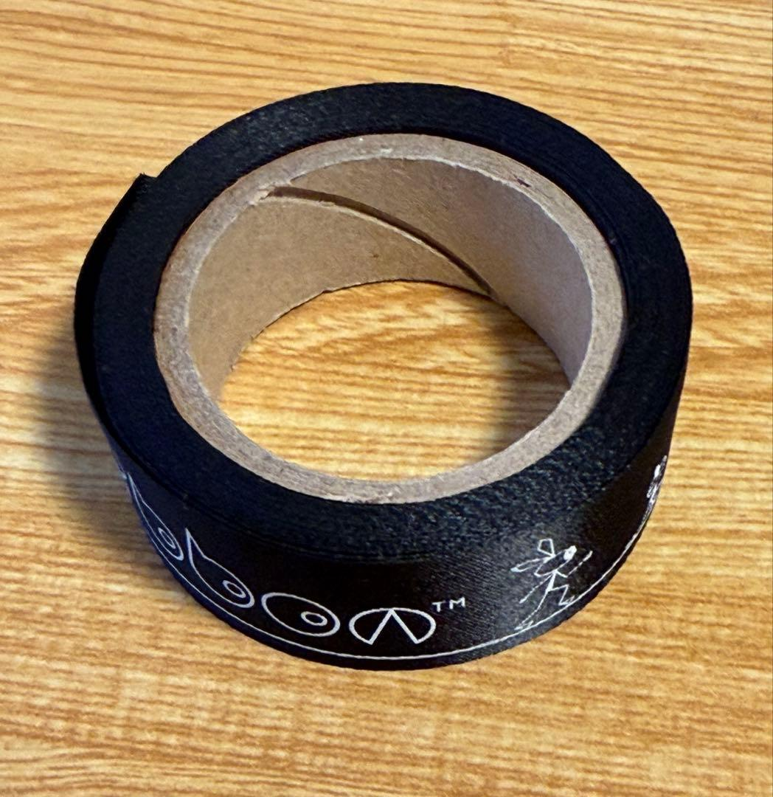
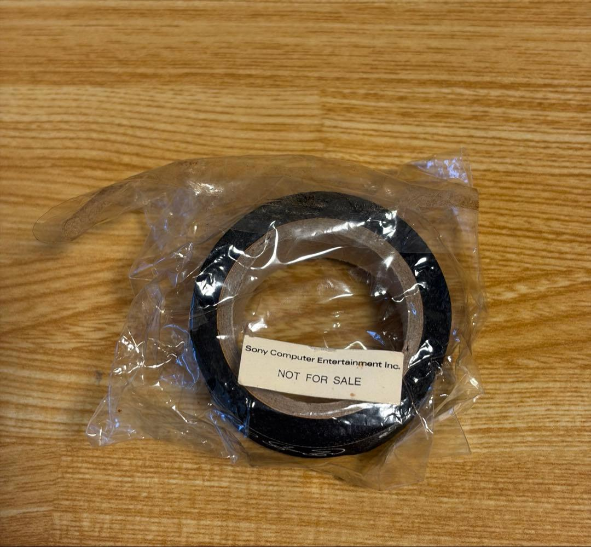

Merchandiseグッズ
Vib-Ribbon's cult following has left behind a small but devoted trail of collectibles — from Japanese store-exclusive goods to the kind of fan-made oddities only a game about a four-line rabbit could inspire. This is a home for that stuff: figures, plush, apparel, stationery, and whatever else Vibri has ended up printed on over the years.ビブリボンのカルト的な人気は、日本のショップ限定グッズから、四本の線でできたウサギのゲームだからこそ生まれたようなファンメイドの珍品まで、小さいながらも熱のこもったコレクティブルの足跡を残してきました。ここはそうしたものたちの置き場所です。フィギュア、ぬいぐるみ、アパレル、文房具、そして長年のあいだにビブリが印刷されてきたあらゆるものを集めています。
Vib-Ribbon Crystal Sculpture (Masaya Matsuura)ビブリボン クリスタル彫刻（松浦雅也）
The rarest piece of Vib-Ribbon merchandise is barely "merch" at all — it's a fine-art collectible. To commemorate the game, series creator Masaya Matsuura and his studio NanaOn-Sha produced a hand-signed crystal glass statuette of Vibri, rendered as a clear, faceted sculpture that catches the light in the same spare, vector-line spirit as the game itself. Only 50 originals were ever made, each signed by Matsuura, making it one of the most sought-after objects in any Vib-Ribbon collection.ビブリボンで最も希少なグッズは、もはや「グッズ」とは呼びにくい、ファインアートのコレクティブルです。ゲームを記念して、シリーズの生みの親である松浦雅也氏と七音社は、直筆サイン入りのクリスタルガラス製ビブリ像を制作しました。透明で多面体のこの彫刻は、ゲームそのものと同じ簡潔なベクター線の精神で光を受け止めます。オリジナルは50体しか作られず、そのすべてに松浦氏のサインが入っており、ビブリボンのコレクションの中でも屈指の逸品となっています。
The sculpture stands roughly 18 cm tall and about 5 cm wide, translating Vibri's flat, four-stroke silhouette into a three-dimensional crystal form. It has been offered through the Dutch game-art gallery Cook & Becker, who at the time of writing listed just 9 of the original 50 pieces as still available — a reminder of how thin on the ground genuine Vib-Ribbon collectibles really are.高さ約18cm、幅約5cmの彫刻は、ビブリの平面的な四本線のシルエットを立体のクリスタルへと翻訳したものです。オランダのゲームアートギャラリーCook & Beckerを通じて販売されており、執筆時点では50体のうち9体だけが購入可能とされていました。本物のビブリボンのコレクティブルがいかに少ないかを物語っています。


Images and details courtesy of Cook & Becker.画像と情報はCook & Beckerのご厚意によるものです。
Vib-Ribbon Hawaiian Shirt (2000)ビブリボン アロハシャツ（2000年）
Some of the best evidence that this shirt existed at all comes straight from the source. The screen below is lifted from the original Vib-Ribbon website, where Sony ran a giveaway around the European launch: a "vib ribbon competition" teased as opening shortly, offering ten of the shirts as prizes for answering a gently silly multiple-choice question about the game. The styling is pure turn-of-the-millennium PlayStation — a model in wraparound shades posed against an electric magenta block, letting the black shirt and its scribbly white cast do the talking.このシャツが実在した最良の証拠のひとつは、公式そのものから得られます。下の画面は当時のビブリボン公式サイトからのもので、ソニーはヨーロッパ発売に合わせてプレゼント企画を行いました。「vib ribbon competition」は近日開始と予告され、ゲームについてのちょっとおかしな選択式クイズに答えると、10着のシャツが当たるというものでした。そのビジュアルは2000年前後のPlayStationそのもので、ラップアラウンドのサングラスをかけたモデルが鮮やかなマゼンタのブロックの前に立ち、黒いシャツとその上の落書きのような白いキャラクターたちに語らせています。

What makes the piece more than a novelty is who made it. The promo credits London designer Daniel Poole with the shirt, and it was produced as genuine PlayStation Europe apparel rather than a bootleg — the surviving example below still carries a glossy PlayStation woven label printed with www.playstation-europe.com at the collar. Instead of the usual palm trees, the "Hawaiian" print is a scattered field of Vibri and her devolved forms — the rabbit, the frog, the worm — drawn in the game's exact white vector line, punctuated with little stars and faceted shapes across a matte black rayon body.この一着を単なるノベルティ以上のものにしているのは、誰が作ったかという点です。プロモーションではロンドンのデザイナーDaniel Pooleがシャツのデザイナーとしてクレジットされており、海賊版ではなく正真正銘のPlayStation Europeアパレルとして生産されました。下の現存品には、襟元にwww.playstation-europe.comと織り込まれた光沢のあるPlayStationのラベルが今も付いています。定番のヤシの木の代わりに、この「アロハ」柄はビブリと退化した姿（ウサギ、カエル、ミミズ）をゲームそのままの白いベクター線で描き、小さな星や多面体の図形を散らして、マットな黒いレーヨン地の全面に広げています。



Vib-Ribbon Promotional Ribbon (Not For Sale)ビブリボン 販促リボン（非売品）
A fabric ribbon given out when Vib-Ribbon was first released in Japan, believed to have been a pre-order bonus or promotional item rather than something sold at retail. The black satin ribbon is printed in the game's white vector line with the vib-ribbon™ wordmark, its Japanese counterpart ビブリボン™, and Vibri walking along a single baseline, all wound on a plain cardboard spool. The sealed example below still carries its Sony Computer Entertainment Inc. sticker marked NOT FOR SALE.ビブリボンの日本初発売時に配布された布製リボンで、店頭で販売されたものではなく、予約特典か販促品だったと考えられています。黒いサテンのリボンには、ゲームの白いベクター線でvib-ribbon™のワードマーク、その日本語版ビブリボン™、そして一本の線の上を歩くビブリがプリントされ、無地の厚紙のスプールに巻かれています。下の未開封品には、NOT FOR SALEと記されたソニー・コンピュータエンタテインメントのシールが今も付いたままです。




